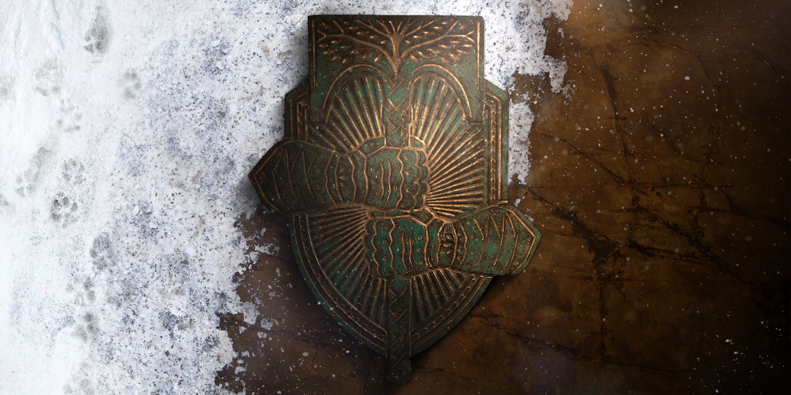

Vous recevez un appel à l'aide du Seigneur Saladin, le dernier Seigneur de Fer encore en vie. Un groupe de
Symbiotes de la Maison des Diables sont tombés sur quelque chose qu'ils n'auraient jamais du trouver.
L'ARIA, une technologie réplicative qui avait décimé les Seigneurs de Fer pendant
l'Age de la Cité avait été scellée dans le Cosmodrome par Saladin.
Malheureusement, les Déchus de la Maison des Diables ont réussi à retrouver cette technologie, et s'en servent pour semer le
chaos partout ou ils passent, mais Saladin ne peut pas les arrêter seul. Il vous demande donc de le rejoindre au
Temple de Fer, sur Terre.
En joignant vos forces au Seigneur Saladin, votre mission est de stopper ce fléau avant qu'il ne menace l'humanité.
Vous vous rendez aux coordonnées indiquées suite au signal de détresse de Saladin. Ce dernier vous contacte
et vous demande d'aller sécuriser un ancien observatoire plus loin dans les montagnes. Il vous informe aussi que la
Maison des Diables est très active dans ces montagnes, il faudra être prudent. Vous demandez à Saladin
pourquoi sécuriser un ancien observatoire, mais il évite la question. Vous vous frayez un chemin dans les montagnes,
en éliminant tous les Déchus qui vous barrent la route. Une fois devant l'observatoire, vous remarquez un
Serviteur, mais celui-ci est étrange...
Votre Spectre analyse le Serviteur, et vous signale qu'il s'agit de Sepiks Premier, mais ce dernier est
censé être mort. Il vous raconte aussi que quelque chose cloche avec sa signature énergétique, il semble être capable de se
régénérer. En écoutant cela, Saladin vous ordonne de tuer Sepiks, maintenant. Si ce Serviteur est réellement ce que Saladin
pense, les portes de l'observatoire ne seront pas assez solides pour le retenir. Après un combat acharné, vous affaiblissez
Sepiks, et Saladin vous rejoint à l'observatoire. Avant que vous n'ayez pu faire un point sur la situation, Sepiks se
relève et s'enfuit.
Saladin vous envoie traquer Sepiks dans la Contrée Infestée pour connaître l'ampleur de la corruption.
Saladin fait mention de l'
ARIA
L'ARIA est une nanotechnologie développée par Clovis Bray pendant l'Age d'Or. Considérée comme une incroyable avancée
technologique, l'ARIA devait être utilisée pour créer de nouvelles structures et colonies sur de nouveaux mondes.
Elle a ensuite été redécouverte par les Seigneurs de Fer, mais s'est retournée contre eux avec l'aide de Raspoutine.
, mais rien ne fait référence à l'ARIA dans les archives de
l'Avant-Garde. Vous cherchez partout, mais aucun signe de Sepiks. Vous vous aventurez dans une usine en
ruines, et Chiro-4, un membre de l'Avant-Garde, vous contacte. Vous apprenez qu'il travaille avec Saladin,
et que l'usine dispose d'un accès au réseau de capteurs de toute la Contrée Infestée, ce qui permettrait de connaître
jusqu'ou s'étend la corruption de l'ARIA.
Votre Spectre pirate la console de commandes de l'usine, quand des Déchus vous attaquent. Mais vous remarquez que ces Déchus
sont différents, ils possèdent la même technologie que Sepiks. Vous les éliminez, et récupérez les données du réseau de
capteurs. Shrio-4 vous remercie pour votre aide sur cette mission, mais Saladin semble préoccupé par quelque chose. Il
semble que la Maison des Diables ait relancé la production d'ARIA. Il vous demande de le rejoindre au
Temple de Fer, l'ancienne maison des
Seigneurs de Fer

Les Seigneurs de Fer font partie des premières personnes à être ressuscitées par un Spectre, et ont choisi de se battre
contre les impitoyables Seigneurs de Guerre. Suivant le conflit avec ces derniers, les Seigneurs de Fer se sont
consacrés à défense les survivants de la Chute et à la restauration de la civilisation.
.
Les Diables Symbiotiques ont pris le contrôle d'un ancien bunker militaire dans la Contrée Infestée.
Saladin et Shiro-4 ne pourront pas recevoir de renforts tant que l'artillerie Déchue dans ce bunker est active. Vous
retournez à l'endroit ou vous aviez récupéré les informations du réseau de capteurs, et vous remarquez un cadavre de
Vandale au sol. Vous l'analysez, et Saladin réalise que la situation est pire que ce qu'il imaginait:
les Symbiotes n'utilisent pas l'ARIA que pour modifier l'environnement, mais aussi pour se modifier eux-mêmes.
Il vous faut donc absolument désactiver les canons d'artillerie du bunker. Vous entrez dans le bunker, et vous apercevez que
les canons sont protégés par des boucliers. Vous trouvez et détruisez les générateurs de boucliers, et les canons sont
vulnérables. Ces derniers étaient censés être détruits pendant la Chute, mais les Symbiotes utilisent l'ARIA
pour les réactiver. Vous détruisez tous les canons, et un Ténébrion Symbiotique apparaît devant vous et tente
de reprendre le contrôle des canons. Vous finissez par détruire le Ténébrion, et Shiro-4 envoie des renforts pour sécuriser la
zone.
Saladin vous demande de retourner au Temple de Fer, il a une histoire à vous raconter. Si Saladin et Shiro-4 veulent éviter
les erreurs qui les ont menés ici, alors il doit vous parler de la Chute des Seigneurs de Fer. Après la Chute, les Seigneurs
de Fer étaient à la recherche d'une technologie qui pourrait créer un nouvel Age d'Or. Ils trouvèrent l'ARIA, et rêvaient
d'utiliser l'ARIA pour construire des vaisseaux spatiaux, des colonies. Mais Raspoutine a répondu. L'ARIA
s'est retournée contre eux, infectant leurs armes et armures. Les Seigneurs de Fer devaient trouver un moyen
de stopper la production d'ARIA.
Plus d'une centaine de Seigneurs de Fer sont entrés dans la Contrée Infestée. A la fin, seulement 9 ont atteint la Chambre
de réplication. Finalement, Jolder, une des neuf Seigneurs de Fer restants, a scellé la Chambre de
réplication avec les Seigneurs de Fer, plutôt que de laisser l'ARIA s'échapper. Saladin était le seul hors de la Chambre
de réplication, et était donc le seul survivant.
Mais votre Spectre est confus. Comment les Symbiotes ont pu en apprendre plus sur l'ARIA que les Seigneurs de Fer ? Mais
surtout, ou l'ont-ils appris ?
En cherchant plus d'informations sur l'ARIA, vous découvrez des phénomènes étranges dans un complexe de
Clovis Bray sur Mars. Malheureusement, ce complexe est en plein territoire Cabal, il
faudra vous frayer un chemin à travers les défenses Cabales. Au rez-de-chaussée, vous trouvez une console de Clovis Bray,
qui vous indique des archives intactes juste en-dessous de vous. Une fois arrivé dans les archives, vous apercevez des
Diables Symbiotiques morts un peu partout, probablement tués par les Cabals. Vous trouvez les données qui vous intéressent,
et vous vous préparez à partir quand un grondement se fait entendre.
Des dizaines de combattants Cabals vous encerclent et tentent de vous tuer, mais vous les éliminez tous. Vous retournez au
Temple de Fer, et rapportez les données que vous avez trouvé à Tyra Karn, une Cryptarque spécialisée dans
l'ARIA et ses origines.
L'heure est venue de mettre fin à la production d'ARIA pour de bon. Shiro-4 vous informe que les Diables Symbiotiques
utilisent un réseau massif pour contrôler a technologie de l'ARIA. Il vous indique également l'emplacement du générateur
qui alimente le réseau Déchu. Vous éliminez toute résistance des Symbiotes, et sabotez le réacteur. Radpidement, les noeuds
d'ARIA commencent à réagir, et de petites explosions se font entendre. Le réseau Déchu est perturbé, mais cela ne durera
pas longtemps.
Vous dirigez vers la Chambre de réplication, quand vous apercevez une gigantesque explosion en provenance du réacteur que
vous avez saboté. Shiro-4 vous raconte que les Diables Symbiotiques ne contrôlent pas l'ARIA, mais l'utilisent pour
améliorer leur arsenal. Il suppose que perturber leur emprise dessus a eu des effets indésirables. En vous rapprochant de
la Chambre, une porte massive vous barre la route. Votre Spectre tente de l'ouvrir quand des Diables Symbiotiques
interviennent. Vous protégez votre Spectre et éliminez toute résistance. La porte est désormais ouverte, et la Chambre est
devant vous.
Une fois à l'intérieur, vous apercevez un terminal. Saladin vous raconte que Jolder avait essayé de le détruire, mais elle
l'a seulement endommagé. Votre Spectre analyse le terminal et lance la séquence d'autodestruction. Soudain, le plafond
s'illumine, et quelque chose bouge, faisant tomber une Hache de Fer devant vous. Le Spectre interrompt la
séquence, et se demande ce qu'il se passe. A ce moment-là, quelque chose vous fait face, et Saladin, choqué, vous indique
qu'il s'agit du Seigneur Felwinter, entièrement infecté par l'ARIA. Vous ramassez la Hache de Fer et vous
préparez à vous battre contre le corps de Felwinter, consumé par l'ARIA.
Une fois vaincu, deux autres formes de vie se détachent du plafond: il s'agit des restes de Jolder, ainsi que de
Ghéléon. Après un combat acharné, vous éliminez les deux Seigneurs de Fer restants, et terminez la séquence
d'autodestruction. La Chambre tremble, et des explosions se font ressentir de partout. Vous courez vers la sortie avant que
les portes ne se referment. Le réplicateur d'ARIA est détruit, et Saladin vous remercie car grâce à votre
aide, les Seigneurs de Fer peuvent reposer en paix.
Maintenant que les Diables Symbiotiques se sont approprié la technologie de l'ARIA, ces derniers l'ont répandu dans toute une section de l'Ancienne Russie. Cette zone est désormais le terrain de jeu des Symbiotes.
Depuis la Crise de l'ARIA ou presque tous les Seigneurs de Fer ont été éliminés, Saladin, le seul survivant, avait verrouillé la Contrée Infestée pour que personne ne puisse un jour déterrer la technologie de l'ARIA. Mais les Diables Symbiotiques l'ont retrouvé et l'ont répandu dans toute la zone. Ils se servent désormais de l'endroit pour leurs terribles expérimentations.
Les rapports des éclaireurs de l'Avant-Garde ne signalent aucun nouveau combattant. Cependant, une forte activité Déchue a été détectée près du Cosmodrome.
AUCUN NOUVEL ENNEMI N'A ÉTÉ DÉCOUVERT.
Les Déchus de la Maison des Diables ont utilisé l'ARIA pour atteindre des prouesses technologiques, et se libérer de leur dépendance à l'éther. En fusionnant avec, ils sont devenus les dieux-machines qu'ils vénéraient autrefois.
UNE NOUVELLE FACTION ENNEMIE A ÉTÉ DÉCOUVERTE SUR TERRE. VOIR LES DIABLES SYMBIOTIQUES.
Avec la découverte de la Contrée Infestée, de nouvelles menaces ont été identifiées, et l'Avant-Garde a mis à disposition des Gardiens un nouvel Assaut.
Un éclaireur de l'Avant-Garde a remarqué quelque chose d'anormal au fond de la Contrée Infestée.
Kovik, Prêtre Symbiotique, fait des expérimentations sur les membres de la Ruche grâce à
l'ARIA.
Les Gardiens doivent donc pénétrer un ancien silo à missiles et arrêter Kovik avant que ses expériences ne deviennent
une vraie menace pour le système.
L'Avant-Garde appelle tous les Gardiens disponibles à se rendre sur Terre pour une mission de la plus haute importance. Préparez-vous, vous devrez affronter les champions les plus puissants des Diables Symbiotiques.
La Chambre de Duplication de l'ARIA a été détruite. La production d'ARIA pour les Diables Symbiotiques a été arrêtée.
Mais il reste encore une chose.
Quelqu'un ou quelque chose continue de distribuer l'ARIA restant aux Symbiotes.
Les Gardiens doivent donc trouver la source de l'infection de l'ARIA et la détruire pour se débarasser des Symbiotes sur Terre.
Mais maintenant que la Chambre de duplication est détruite, les Symbiotes feront tout leur possible
pour vous empêcher d'atteindre leur dernière source d'ARIA.
Dans Destiny, un Raid est composé de plusieurs étapes. Chaque étape possède une mécanique de jeu bien précise
qui est nécessaire à sa complétion.
Si vous souhaitez découvrir les mécaniques de ce Raid, cliquez ici.